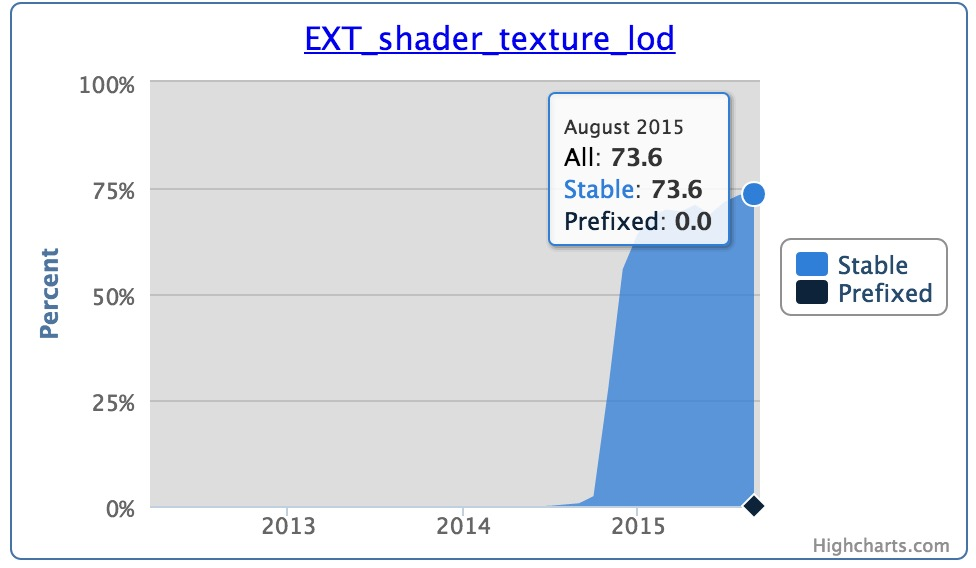
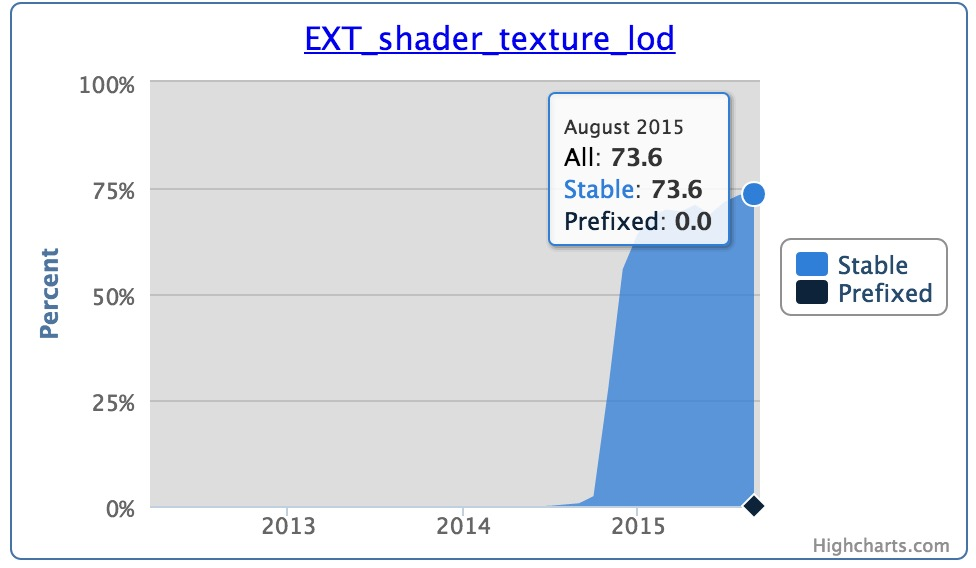
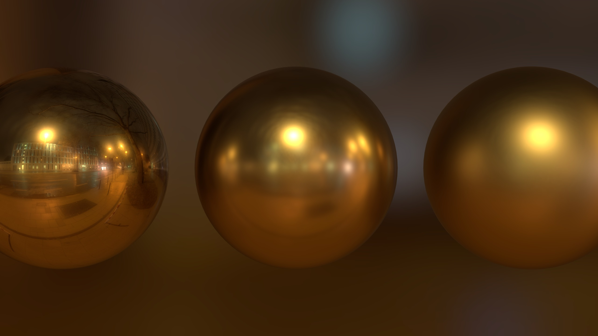
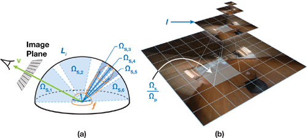
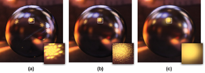
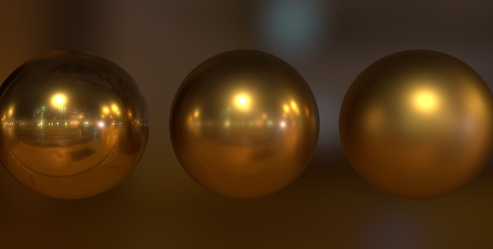
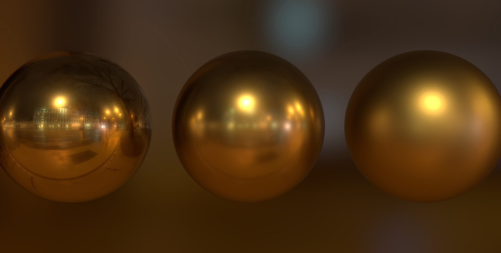
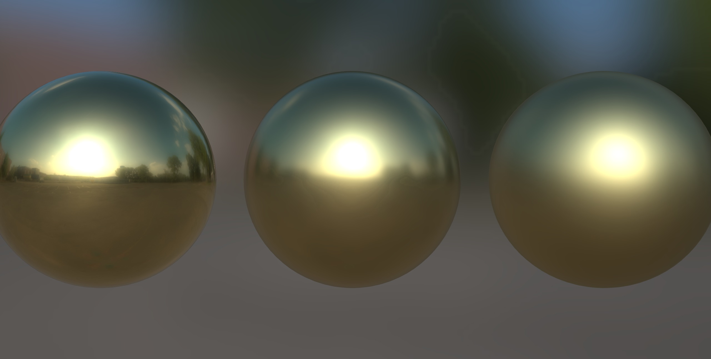

PBR envtools
by Cedric Pinson / @trigrou
@sketchfab
Light [1]
Micro geometry

Surface rough

Surface plane

Approximation
Diffuse / Specular

Microfacet Specular BRDF [1]

Diffuse [2]

Image Based Lighting
Use enfironment as lightsource
 image from hdri-hub.com [3]
image from hdri-hub.com [3]
Prefiltering Environment
WebGL Stats [8]
 

Cubemap seams
No ARB_seamless_cube_map extension
AMD cubemap gen has code to fixup [5]

image from Ignacio Castaño post [9]
Panorama lod fallback

better alternative Octahedral projection [10]
Envtools [11]
- Spherical Harmonics for diffuse
- Panorama and Cubemap GGX
- Environment preview
- Blurred environment background
- Color encoding (float,rgbe,rgbm,luv)
- MulitThread / OpenCL
Demo [4]
Samples count
- Depends on the HDR range
- Depends on roughness level
Samples range:1500
1024
2048

4096
8192
16384
32768
65536
Optimization
- Prefiltered importance sampling [12]
- Precompute all samples [13] @padraichennessy
- Color encoding (float/rgbe/rgbm/luv) [14] [15]
Importance Sampling [12]
Importance Sampling [12]
Color Encoding
float

rgbm
rgbe

luv
Color Encoding
float
rgbm

rgbe
luv
Storage 256
Interleave
| size | format | encoding |
|---|---|---|
| 1.3M | panorama | luv |
| 1.6M | panorama | rgbm |
| 1.7M | panorama | rgbe |
| 7.2M | panorama | float |
| 1.1M | cubemap | luv |
| 1.4M | cubemap | rgbm |
| 1.4M | cubemap | rgbe |
| 5.5M | cubemap | float |
Bitplane
| size | format | encoding |
|---|---|---|
| 687K | panorama | luv |
| 1002K | panorama | rgbm |
| 924K | panorama | rgbe |
| 6.9M | panorama | float |
| 646K | cubemap | luv |
| 944K | cubemap | rgbm |
| 885K | cubemap | rgbe |
| 5.2M | cubemap | float |
Resources
[1] Natty Hoffman, Physics and Math of Shading[2] Sebastien Lagarde, PI or not to PI in game lighting equation
[3] HDR environment hdri-hub.com
[4] Mitsuba PBR renderer
[5] Sebastien Lagarde, AMD Cubemapgen for PBR
[6] Brian Karis, Epic UE4 shading
[7] Charles de Rousiers & Sébastian Lagarde, Moving Frostbite to PBR
[8] Florian Boesch, WebGL stats
[9] Ignacio Castaño, post about cubemap seams
[10] Jeff Russel, HDR image based lighting on the web
[11] Cedric Pinson, envtools
[12] GPU based importance sampling
[13] Padraic Hennessy, Runtime Environment Map Filtering for Image Based Lighting
[14] Christer Ericson, Converting RGB to LogLuv in a fragment shader
[15] Brian Karis, RGBM color encoding
[16] Sketchfab
Thank you
by Cedric Pinson / @trigrou@sketchfab